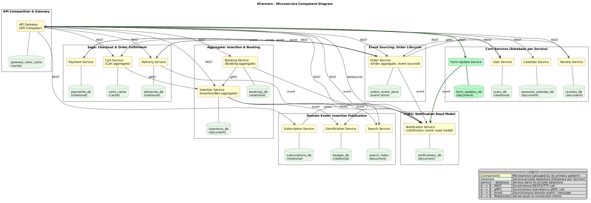
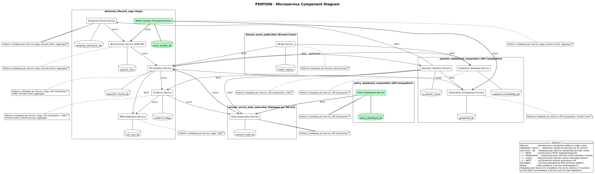
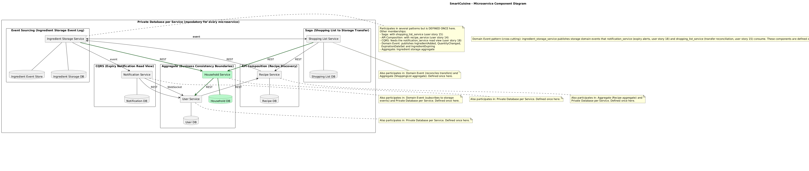

EFarmers is a local-produce marketplace decomposed into 14 microservices using Database-per-Service,
Saga, Event Sourcing, CQRS, Domain Events and API Composition. Across five future scenarios its weighted graph-edit
distance averaged just 7.6 — a near-best score, second only to EventTicket (1.4) among all 19
projects evaluated.
Original specification
dataset/student_projects/EFarmers/input.txt · 36 user stories
E-Farmers is an e-commerce website that aims to connect local farmers with customers who are interested in
buying fresh and locally sourced products. Our platform allows farmers to showcase their products by publishing
insertions, while customers can easily browse and purchase these goods. Whether you are a farmer looking
to sell your products or a customers seeking high-quality “farm-to-table” items, E-Farmers has something for
everyone. Moreover, if you cannot reach the farmer’s warehouse yourself, you can rely on riders who can ship
the products to your home.
As a visitor, I want to register to the website with an email
As a user, I want to logout from my account
As a user, I want to reach a login page so that I can login into my account
As a farmer, I want to publish a new insertion
As a user, I want to access the home page
As a user, I want to access my personal page, so that I can see my informations
As a customer, I can check on calendar all seasonal foodstuff
As a user or visitor, I can search for farmer’s insertions
As a the owner of an insertion, I want to delete one of my insertions
As a farmer, I want to modify my insertions
As a user, I want to see the expiring boxes
As a customer, I want to update my status to Farmer
As a user, I want to access a farmer page, so I can see his information
As a customer, I want to add a product in my cart, so that I buy this product
As a customer, I want to delete the boxes added to the shopping cart
As a customer, I want to generate an order which contains items from my shopping cart
As a customer, I want to be able to checkout and pay for my order using a secure payment gateway.
As a customer, I want to book a product from the calendar
As a customer, I can subscribe to a farmer, so I will be notify for his every new insertion
As a customer, I want to have a list of the farmers that I am subscribed to
As a farmer, I want to accept or decline incoming requests for booked boxes
As a customer, I want to check my order history, so I can remember past purchases
As a user that bought a box, I want to leave a comment to the farmer
As a customer, I want to update my status to Rider, so that I can deliver stuffs.
As a rider, I want to have a personal delivery page
As a rider, I want to change my availability status to available so that I can receive delivery requests
As a customer, I want to select a delivery option, so that I can receive the products at home
As a farmer, I want to earn badges so that my achievements are showcased on my profile page
As a visitor, I want to register to the website with OAuth
As a user, I want to be able to modify my informations
As a the owner of an insertion, I want to be able to add boxes on my insertion
As a user, I want to see the status of my requests for booked boxes
As a user, I want to see my cart, so I can see all the products I am about to purchase
As a rider, I want to be able to update the status of an order that i have delivered
As a customer, I want to be able to unsubscribe from a farmer, so that I no longer receive notifications for his insertions
As a customer, I want to have a notification center, so I can read my notifications
As a customer, I want to reorder a past purchase using a voice command, so that I can shop hands-free.
Removed from the spec
Nothing removed — purely additive.
BeforeAfter — identical graph
No structural change. Voice reordering is a new client-side trigger over
capability the order_service / cart_service pair already
exposes — same nodes, same edges, nothing to highlight. This is what a modifiability score of 0 for
a scenario looks like: the spec grew, the architecture didn’t have to.
No pattern was added or changed by this modification — nothing to click through to.
Scenario B — Replace subscriptions with a social follow/feed model
Complex · highest weight in this project
“Replace farmer subscription with a social follow/feed model.”
As a customer, I want to follow a farmer, so that I can see their new insertions and updates in my personalized feed.
As a customer, I want to view a personalized feed of products from farmers I follow, so that I can discover relevant local products.
As a customer, I want to unfollow or mute a farmer, so that I can control what appears in my feed.
As a farmer, I want to post farm updates and announcements, so that my followers stay engaged and informed.
Removed from the spec · original numbering
#19 — subscribe to a farmer for new-insertion notifications
#20 — list of subscribed farmers
#35 — unsubscribe from a farmer
Before

After — new service addedadded
One new service, four new edges — highlighted in green above. Rather than
deleting subscription_service, the model layered a new
farm_update_service (+ farm_updates_db) beside it, wired
to api_gateway and into the existing notification_service
event fan-in. Five edit operations at weight 4 gives a weighted GED of 20 — the single largest of the
five values averaged into EFarmers’ 7.6 score, and the only one of its five scenarios that moves the
needle much.
PENTION is an EU security-research system for detecting synthetic-drug vapour signatures,
built around a Situational-Intelligence Tool (SIT) and ten services spanning Saga, API Composition, Domain Event,
CQRS, Event Sourcing and Aggregate patterns. Its weighted graph-edit distance averages 34.8 —
the worst (highest) of all 19 projects evaluated. It was originally included here as a deliberate contrast to
EFarmers; after a metric fix corrected several other projects’ inflated scores downward, PENTION’s
own score barely moved (36.2 → 34.8) and it ended up as the genuine worst performer, which makes it an
even sharper contrast than intended.
Original specification
dataset/student_projects/PENTION/input.txt · 69 user stories
PENTION is an EU security research project developing a dual-modality vapour detection system to combat
synthetic drug manufacturing and trafficking. The system comprises PENTION-S (static) for high-throughput
screening of parcels and warehouse environments, and PENTION-M (mobile) for vehicle-mounted open-area sweeps
and checkpoint operations. Both configurations utilize high-flow vapour sampling coupled with Differential
Mobility Analyzer–Mass Spectrometry (DMA-MS) to detect synthetic drugs, precursors, and by-products at
very low concentrations (parts per quadrillion range), addressing critical gaps in current law enforcement
capabilities where reliance on trained dogs and laboratory analysis creates operational bottlenecks.
At the core of the detection capability lies the Situational-Intelligence Tool (SIT), an AI-driven
analytics engine that performs real-time peak deconvolution, interference filtering, and classification of
chemical signatures. The system delivers automatic, explainable results with full chain-of-evidence
documentation, integrating directly with Risk Management Systems (RMS) to prioritize suspicious cargo and
parcels. A secured Machine-Learning Operations (MLOps) pipeline ensures continuous model updates as background
chemistries and concealment tactics evolve, supported by an open, FAIR-compliant database of substances that
maintains detection relevance against emerging threats.
Designed specifically for Law Enforcement Agencies (LEAs) and Customs, PENTION addresses the need for
non-intrusive, rapid screening (<3 minutes sampling, <1 minute analysis) with high detection rates
(>80–90%) and low false alarms (<5%). The solution emphasizes field autonomy through lightweight,
battery-operated designs (>5 hours) requiring no mains power or specialist consumables, while ensuring
GDPR-compliant data handling and AI transparency for legal admissibility. Beyond operational deployment, the
project strengthens EU technological sovereignty by providing SMEs with a pathway to market for advanced
detection technologies, reducing dependence on non-EU suppliers while delivering measurable impact against
EMPACT priorities for disrupting synthetic drug distribution across Europe.
As a EU, LEAs, Customs, Citizens, I want to disrupt and reduce synthetic drug manufacturing and distribution in Europe, so that synthetic drug manufacturing and distribution in Europe are disrupted and reduced.
As a LEAs, Customs, I want to detect synthetic drugs, their precursors, and by-products at very low concentrations, so that we can identify these substances even in trace amounts.
As a LEAs, Prosecutors, I want support with reliable, explainable, and legally admissible evidence, so that prosecutions can proceed successfully and evidence holds up in court.
As a SMEs, EU policy, I want a pathway to market adoption of advanced detection technology, so that EU SMEs can commercialize and deploy advanced detection solutions.
As a EU, SMEs, I want to strengthen EU sovereignty and reduce dependence on non-EU suppliers in security tech, so that the EU has autonomous security capabilities.
As a LEAs, I want portable, mobile, and static solutions for labs, vehicles, and parcels, so that I can deploy detection capabilities across various operational contexts.
As a Customs, I want fast, non-intrusive, high-throughput parcel/container screening, so that trade flow is maintained while security is ensured.
As a Courts, Prosecutors, I want trustworthy detection results admissible as evidence, so that they can be used in legal proceedings.
As a SMEs, I want innovation access to civil security markets, so that we can commercialize our innovations.
As a EU Policy, I want measurable impact against EMPACT 2022-2025 priorities, so that policy objectives are met and drug trafficking is effectively combated.
As a LEAs, Customs, I want to detect synthetic drugs (MDMA, methamphetamine, amphetamine) and at least 6 precursors/sub-products, so that we can identify a broad range of illicit substances and their components.
As a LEAs, Customs, I want mobile detection (PENTION-M) and static detection (PENTION-S), so that flexible deployment in both mobile and fixed scenarios is enabled.
As a LEAs, I want automatic identification of clandestine labs using vapour dispersion models with GNSS data, so that we can locate illegal drug production facilities.
As a LEAs, Customs, I want integration with open, continuously updateable databases of substances, so that the system stays current with new substances and threats.
As a LEAs, RTOs, I want AI-based peak/interference analysis for accurate identification, so that detection accuracy is maximized despite complex chemical backgrounds.
As a LEAs, Customs, I want automatic reporting to operators (zero manual interpretation), so that rapid decision-making is possible without requiring expert chemical knowledge in the field.
As a Customs, I want synergy with Risk Management Systems for prioritisation of suspicious cargo/parcels, so that resources are focused on highest-risk items.
As a LEAs, Customs, I want sampling time under 1–3 minutes depending on scenario, so that high-throughput operations are maintained.
As a LEAs, Customs, I want analysis time under 1 minute, so that rapid screening and minimal delays are achieved.
As a LEAs, Customs, I want a detection rate greater than 80% in open areas and greater than 90% in semi-closed areas, so that high confidence that threats are identified is ensured.
As a LEAs, Customs, I want a false alarm rate below 5%, so that operational efficiency is maintained and resources are not wasted on false positives.
As a Operators, I want user-friendly interfaces for non-experts, so that personnel without specialized training can effectively operate the system.
As a SMEs, Buyers, I want affordable acquisition and operation costs less than dogs and less than ETDs, so that cost-effective deployment and maintenance are achieved.
As a SMEs, Buyers, I want minimal consumables, auto-cleaning, and low environmental impact, so that sustainable and economical operation is achieved.
As a LEAs, I want a lightweight, autonomous system with battery life greater than 5 hours, so that extended field operations without power constraints are possible.
As a LEAs, Customs, I want continuous 24/7 operation robust against interferents, so that persistent monitoring capability in challenging environments is ensured.
As a LEAs, Prosecutors, I want results interpretable by LEAs backed by AI transparency, so that legal admissibility and trust in automated decisions are ensured.
As a Citizens, LEAs, I want non-intrusive, GDPR-compliant, secure data sharing, so that privacy rights are protected while maintaining security.
As a RTOs, SMEs, I want vapour detection sensitivity in the ppq range, so that detection of extremely low concentration substances is possible.
As a RTOs, LEAs, I want atmospheric dispersion modelling with Gaussian plume and AI/ML hybrids, so that accurate source location of clandestine labs is achieved.
As a RTOs, SMEs, I want materials innovation for selective adsorbents such as MOFs and polymeric materials, so that enhanced capture and detection of target substances is achieved.
As a RTOs, I want an AI/MLOps pipeline for self-optimising detection routines (SIT), so that the system adapts and improves detection accuracy over time.
As a LEAs, I want GNSS/Galileo integration for mobile operations, so that accurate geolocation of detection events and source identification is achieved.
As a EU, RTOs, I want open science and FAIR data compliance for non-classified results, so that research findings are reusable and accessible to the scientific community.
As a Consortium, EU, I want TRL7 prototypes by project end, so that validated system readiness for operational demonstration is achieved.
As a Consortium, EU, I want effective detection of (pre)precursors and illegal drugs in multi-usable systems for public and private scenarios, so that versatile application across different security contexts is achieved.
As a Consortium, EU, I want to lower detection barriers both from a technical and operational perspective, so that wider adoption and easier deployment of detection technology is achieved.
As a Consortium, EU, I want to develop a mobile drug sniffer or sampler/detector that can identify pre-/pre-pre-cursors and substances, so that mobile capability to detect early-stage production materials is achieved.
As a Consortium, EU, I want to overcome insufficient time constraints for sampling and analysis at high throughput border crossings, so that border operations remain efficient.
As a Consortium, EU, I want to create a tool that detects drugs or precursors without damaging scenarios and equipment/matrices, so that non-destructive testing preserves evidence and operational integrity.
As a Consortium, EU, I want to detect drug production operations proactively rather than only when operations go wrong (e.g., fires) or first-trial attempts fail, so that proactive intervention and prevention are possible.
As a Consortium, EU, I want to develop a device to detect low concentrations of synthetic drugs, precursors and pre-precursors, so that early detection of illicit activity is achieved.
As a Consortium, EU, I want an alternative to trained dogs and swabs for detection in relevant cases, so that more reliable and scalable detection methods are available.
As a Consortium, EU, I want the PENTIUM project to contribute as complementary technology to others and as a guide for further investigation, so that synergistic effects with existing technologies and future research guidance are achieved.
As a Consortium, EU, I want the technology to match the skills and competences of users and have appropriate dimensions, so that usability and practical deployment are ensured.
As a Consortium, EU, I want AI to be rigged to retrain for every operational theater and be subject to all requirements as policies, so that contextual adaptation and compliance are ensured.
As a Consortium, EU, I want reliability, precision, accuracy, and robustness in detection, so that trustworthy and consistent performance is ensured.
As a Consortium, EU, I want field deployable operation with no mains power required and relatively easy use without in-field method development, so that autonomous field operation and ease of use are achieved.
As a Consortium, EU, I want to address insufficient time to execute sampling and analysis for high throughput border crossing areas, so that efficient border processing is maintained.
As a Consortium, EU, I want careful handling of samples using appropriate precautions such as gloves, protective cover, and refrigeration if not analyzed immediately, so that sample integrity and operator safety are ensured.
As a Consortium, EU, I want sampling methodology that requires operator training to focus on areas likely to hide contraband, so that effective targeting and detection are achieved.
As a Consortium, EU, I want to prevent sample overload with other chemicals from cargo types that potentially cause positive or negative alarms, so that detection accuracy is maintained without interference.
As a Consortium, EU, I want autonomous power solutions such as generators for locations without mains power at border crossings or seaports, so that operational capability in remote locations is ensured.
As a Consortium, EU, I want to use meteorological stations to determine wind direction, speed, etc. when screening for hidden illicit labs, so that accurate location of vapor sources is achieved.
As a Consortium, EU, I want high sensitivity and low detection limit for specific substances so that drugs or precursors can be detected at very low concentrations, so that detection of trace amounts is achieved.
As a Consortium, EU, I want selectivity to distinguish different synthetic drugs and their precursors without false positives, so that accurate identification is ensured.
As a Consortium, EU, I want real-time or fast detection without the need for laboratory analysis so that judgements are quickly possible on the spot, so that immediate decision making is enabled.
As a Consortium, EU, I want robustness against interfering substances that occur in ambient air such as other vapours and dust particles, so that reliable operation in real-world environments is ensured.
As a Consortium, EU, I want the ability to take air samples in various environments such as closed containers, homes and packaging, so that versatile detection capabilities are achieved.
As a Consortium, EU, I want user-friendliness for operators without specialised technical knowledge such as simple operation and clear reading, so that broad usability without extensive training is achieved.
As a Consortium, EU, I want portability and compactness so that the device can be used on location in various environments such as during container inspection or postal control, so that flexible field deployment is achieved.
As a Consortium, EU, I want fast operational deployment with minimal calibration and maintenance, so that readiness and reduced downtime are ensured.
As a Consortium, EU, I want the possibility of data registration and transfer for reporting and evidence, so that documentation and legal admissibility are ensured.
As a Consortium, EU, I want safety in use without exposure to hazardous substances for the operator, so that operator health protection is ensured.
As a Consortium, EU, I want field deployable operation with no mains power required, so that autonomous field operation is achieved.
As a Consortium, EU, I want relatively easy to use operation with no in-field method development required, so that immediate operational capability is ensured.
As a Consortium, EU, I want rapid detection with few minutes response time, so that timely results are achieved.
As a Consortium, EU, I want operation without specialist materials such as gas cylinders or liquid N2, so that logistical simplicity and safety are achieved.
As a Consortium, EU, I want the system to be usable away from a lab environment, so that field deployment capability is ensured.
As a LEAs, I want to integrate PENTION vapour data with wastewater sampling at sewage treatment plants, so that regional synthetic drug production hotspots can be identified.
As a RTOs, I want automated pre-concentration and DMA-MS analysis of water samples using PENTION consumables, so that trace drug residues can be monitored without a separate laboratory workflow.
As a EU Policy, I want anonymized community-level drug residue dashboards, so that policy impact and emerging trends can be measured.
Removed from the spec
Nothing removed — purely additive.
Before

After — two services addedadded
Two new services, four new datastores and edges — highlighted in green above.
A water_sample_processing_service (+ water_sample_db) joins
the detection saga and feeds spectrometry_service and the geolocation pipeline; a
separate policy_dashboard_service (+ policy_dashboard_db)
is added purely for the EU-policy dashboard story. Ten edit operations for a “lower”-weight,
medium-magnitude scenario is still substantial — more than half the raw edit cost of the large-magnitude
scenario below (GED 19) — a reminder that a scenario’s self-reported weight and its actual
structural cost don’t always move together.
As a LEAs, I want a swarm of UAVs carrying lightweight PENTION-M vapour sensors, so that large open areas and complex sites can be searched rapidly.
As a LEAs, I want autonomous plume-following and source-seeking flight paths, so that clandestine labs can be located without manual piloting.
As a RTOs, I want tomographic reconstruction of vapour concentration fields from multiple UAVs, so that source location is more accurate than single-point dispersion modelling.
As a EU Policy, I want counter-UAS and airspace deconfliction compliance for PENTION UAV operations, so that aerial detection can be legally and safely deployed near critical infrastructure.
Removed from the spec · original numbering
#13 — clandestine-lab identification via GNSS dispersion models
A service gets retired, not just added to. Removing the two dispersion-modelling
stories let the model retire geolocation_dispersion_service (+
geospatial_db) entirely — marked red in the “before” diagram
— and replace it with a three-service cluster, marked green in the “after”:
uav_swarm_service, tomographic_source_location_service,
airspace_compliance_service — each with its own datastore and rewired
operator_interface_service / sit_analytics_service edges.
Node removal plus six-node addition plus a dozen new edges is why this single scenario carries a weighted GED
of 76.0 — by far the largest of PENTION’s five scenarios (the next is 48.0), and the single
biggest reason its average lands at 34.8, the worst of all 19 projects. It is also the most structurally
disruptive scenario across all three featured projects.
+ 11 edgesrewiring operator_interface_service and sit_analytics_service onto the new cluster
joinsAPI Composition, Domain Event, Database per Service
Modifiability score
14.8
Normalized score
0.617
Rank (raw)
8 / 19
Rank (normalized)
15 / 19
Baseline graph
11 nodes
Baseline edges
13
SmartCuisine is a recipe-and-nutrition planner built on just five microservices (Ingredient
Storage, Shopping List, Notification, Recipe, User), covering Event Sourcing, Saga, CQRS, API Composition and
Aggregate patterns. It is featured here because of where it used to sit: it originally posted 90.0,
the highest (worst) average weighted graph-edit distance of all 19 projects — and turned out to be the
clearest case of the GED-scorer bug described in the intro. With the fix applied and the score recomputed from
the same on-disk diagrams (no new LLM calls), SmartCuisine now averages 14.8 — solidly mid-pack,
tied for rank 8. Nothing about SmartCuisine’s architecture changed; only the measurement did. One more
wrinkle: SmartCuisine is a small system (11 real components, 13 edges), so the same raw edits count for more
once normalized by baseline size — its normalized score (0.617) actually ranks 15th of 19, worse than its
raw rank suggests. See the “All 19” tab for the full comparison.
Original specification
dataset/student_projects/SmartCuisine/input.txt · 22 user stories
Smart Cuisine aims to develop an application to discover new recipes and check their nutritional values in
order to monitor the daily intake of macronutrients. This application aims to improve the quality of the food
intake and to give new ideas to people who want to eat in a healthier way, without giving up on tasty meals.
The application meets the needs of the users with dietary restrictions given by health issues, intolerances
and religious or moral choices. To achieve the previous purposes the system allows short-term and medium-term
meal planning for the following days. The type of users which could be interested about this application are
personal trainers, people who can’t afford a dietist or prefer to plan their meals by themselves.
Another possible user could be a person who uses the application to write down his shopping list and check
the nutritional values of the items in the list.
As a not registered user, I want to subscribe with email and password so that being a registered user.
As a registered user, I want to log in with email and password so that logging in my account.
As a registered user, I want to access my profile so that I can visualize my personal data.
As a registered user, I want to delete my account so that being no more a registered user.
As a registered user, I want to modify my email address so that I can update it.
As a registered user, I want to modify my password so that I can update it.
As a registered user, I want to modify my gender so that I can update it.
As a registered user, I want to add my ingredients to the storage so that I can keep track of the ingredients I have at home.
As a registered user, I want to delete an ingredient from my storage so that I can delete an ingredient I used for a recipe.
As a registered user, I want to search for recipes so that I can find ideas for meals.
As a registered user, I want to save recipes so that I can access them easily in the future.
As a registered user, I want to add the ingredients to my shopping list so that I can keep track of what I need to buy.
As a registered user, I want to delete a saved recipe so that I can remove it if I don’t like it.
As a registered user, I want to search recipes containing a specific ingredient so that I can find something I can cook with the ingredients I have in storage.
As a registered user, I want to move the ingredients from my shopping list to my ingredients storage so that I can keep track of what I bought.
As a registered user, I want to delete an ingredient from my shopping list so that I can remove it if I already have it.
As a registered user, I want to set the expiration date for the ingredients in my storage so that I can remember when they will expire.
As a registered user, I want to receive notifications 1 day before my ingredients expire so that I have time to cook them before the expiration date.
As a registered user, I want to set the quantity for the ingredient in my storage so that I can know the quantities of each ingredient in the storage.
As a registered user, I want to create a shopping list, so that I can keep track of what I want to buy.
As a registered user, I want to delete a shopping list, so that I can keep track of what I want to buy.
As a registered user, I want to read my shopping lists, so that I know what to buy.
As a registered user, I want to rate and review a recipe so that I can share my experience and help other users choose meals.
Removed from the spec
Nothing removed — purely additive.
Before
After — identical graph
No structural change, and the wording of the diagram stayed byte-identical too.
A rating is just a new attribute on data recipe_service already owns — same
five services, same package titles, same edges. Notably, this is also the only SmartCuisine scenario
that re-rendered the surrounding PlantUML wording exactly as before (see the note on Scenario B) — which
is exactly why it is the one scenario that scores a clean 0.
No pattern was added or changed by this modification — nothing to click through to.
Scenario B — Shared household accounts and collaborative lists
Complex · highest weight in this project
“Support shared household accounts and collaborative lists.”
As a registered user, I want to create or join a household so that I can share meal planning and shopping with family members.
As a household member, I want to manage a shared ingredient storage so that everyone knows what is available at home.
As a household member, I want to create a shared shopping list so that my household can plan purchases together.
As a household member, I want to read the shared shopping list so that I know what we need to buy.
As a household member, I want to delete a shared shopping list so that we can remove old lists.
Removed from the spec · original numbering
#20 — create a personal shopping list
#21 — delete a personal shopping list
#22 — read personal shopping lists
Before

After — one service addedadded
GED 6 is now correct, and it matches the diagram. The real diagram delta is one
new service, highlighted in green above: household_service (+
household_db), with three new edges into user_service,
ingredient_storage_service and shopping_list_service
— roughly the same size as EFarmers’ own “large” scenario above (GED 5). This scenario
originally scored GED 43, though, because the regenerated diagram also renamed its outer wrapping
package from “Database per Service (mandatory for every microservice)” to “Private
Database per Service (mandatory for every microservice)”. The parser this benchmark used identified
every component by its full nested-package path, so that one-word rename silently changed the
identity of all 10 components nested inside the package — the search could no longer match any of them
to the original graph, and scored the whole diagram as replaced. The same thing happened in SmartCuisine’s
scenarios 2 and 4, which rename the same package (GED 38 and 48, now 1 and 9); scenarios 1 and 3 kept the
title byte-identical and were unaffected (GED 0 and 5, unchanged). We fixed this in
Evaluation/modifiability_graph.py::canonicalize_for_ged — it drops
grouping/package nodes from the comparison entirely and identifies each real component by its own name, so a
cosmetic package rename can no longer cascade into a false rewrite. SmartCuisine’s score moved from
90.0 (worst of 19) to 14.8 (rank 8) purely from this fix, with zero LLM calls and zero changes to any
diagram.